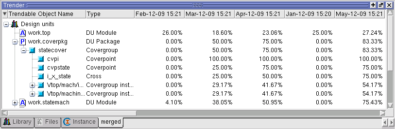

The Trend report
data can be viewed in the Trender window in the Browser, after following
a short sequence of steps.
(Refer to Verification Trender Window in the GUI Reference Manual for a description
of the window.)
Procedure
- View the
trend database by choosing Verification Management >
Browser.
- Select a trend UCDB to analyze,
and right click to bring up the menu.
- Choose Trend
Analysis > View Trender
The Trender window opens up
in a tab, as shown in Figure 1.
Figure 1. Trender Window
- Open the graph from the Trender
window:
- Select the objects whose coverage
over time you wish to examine. Multiple objects can be tracked in
a single window.
- Right click
and choose one of the following from the popup menu:
View Trend
Graph Using Local Coverage — opens graph with local
aggregation.
View Trend
Graph Using Recursive Coverage — opens graph with recursive
aggregation.
Select Coverage
and View Graph... — opens a dialog box for enabling
coverage types and recursive aggregation for viewing in the graph.
Choosing
any of these displays a two-dimensional graph in the Verification Management
area, similar to that shown in Figure 2.